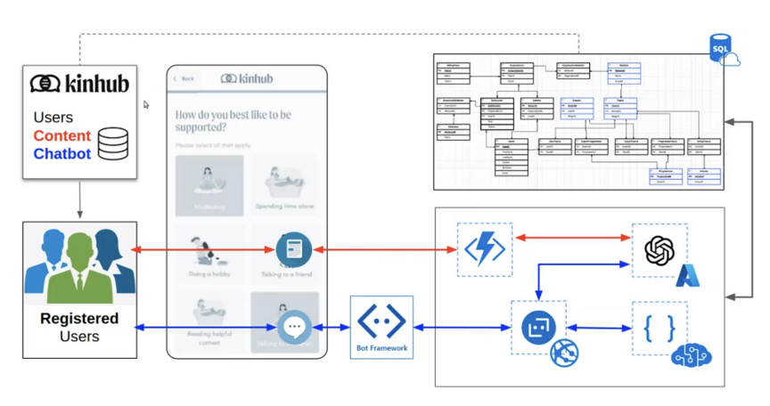

In an era of continuous digital evolution, King's College London’s Urban Informatics MSc program strives to keep our students at the forefront of technology, specifically data science and AI. Our curriculum emphasizes real-world applicability, encouraging students to utilize their skills to address societal issues, with a good partnership case study conducted by 22/23 MSc Urban Informatics student, Mr Mindaugas Skocekas.
During his transformative internship at Kinhub, Mindaugas combined technical acumen, understanding of human diversity, and principles from our curriculum to test out building a wellness chatbot, experimenting with state-of-the-art Generative Pre-trained Transformers (GPT).
Figure 1 The Diagram of whole process
In realisation of the growing mental health challenges in workplaces, Kinhub the placement host organisation had proposed the project to Mindaugas:
‘Does this new form of technology truly enhance the lives of our citizens, and how can we leverage AI to foster a better quality of life?’
The goal transcended the creation of a chatbot in the aim to tackle with mental wellness in work environments. With workplaces being an integral part of urban life, the mental health implications cannot be understated. This project gave Mindaugas an opportunity to expand his knowledge of AI and data science and their application to urban wellness, while working with Kinhub’s AI team, Erika Brodnock MBE and Mr George Velentzas and academic supervisor, Dr Yijing Li at King’s.
Over the 10-week placement, Mindaugas worked with the team to design a chatbot that caters to the unique mental wellness needs of employees in diverse organizations. This wasn’t simply a technological feat; it was a significant stride in promoting mental wellness in urban workplaces. The work demonstrated the potential of data and technology to foster safer, more inclusive, and supportive urban environments. His journey at Kinhub is a true embodiment of the MSc program’s vision: (1) to bridge academia and the professional world, enabling students to employ their technical skills in socially relevant contexts; (2) in this digital era, keeping pace with such transformative technologies is a crucial philosophy embedded in the Urban Informatics program, being able to test out with revolutionizing tools, such as the ChatGPT, has prepared our students like Mindaugas to stay at the forefront of AI; (3) the essence of Urban Informatics subject is to integrate data science and AI with urban well-being comprehensively.
The project-developed wellness chatbot caters to diverse individuals, promoting an inclusive, compassionate work environment. By offering tailored advice, the chatbot enhances the user experience and nurtures mental wellness, marking a direct contribution to societal betterment. Technically, this experimental chatbot underwent substantial enhancements to serve as a specialized wellness and support bot. It evolved to prioritize user experience, and to deliver personalized recommendations and suggestions based on past interactions. Towards the end of his internship, Mindaugas deployed the chatbot on cloud computing platforms and configured the CICD pipelines. For test purposes, a simulated character had been created. He explored the options of optimizing suggestions and finally achieved the following:
Created a simulated character, with manually populated attributes to simulate the user’s experience.
Integrated the latest GPT language models with the Bot Framework SDK, and experimented with prompt-engineering methods, prioritizing dialogue quality over design.
Deployed the bot on cloud computing platforms and explored connecting it to social medias.
Equally important to the technical achievements, Mindaugas honed his problem-solving skills. He navigated challenges, explored creative solutions, and significantly sharpened his analytical thinking. He also developed critical soft skills, particularly communication and time management. His experience underlines the importance of these skills in diverse team settings.
Mindaugas's ability to balance multiple tasks, meet deadlines, and work within constraints reflect his readiness for future roles with increased responsibility. Recognizing his diligence and positive impact, Kinhub offered him an extension of his association within the organization. This transition reiterates the applicability of skills learned in our program, it also inspires our students, illustrating the exciting opportunities in this evolving field. As we continue to prepare our students for the ever-evolving urban landscape, this successful partnership project emphasizes the importance of continuous learning and adaptability, as well as affirmed the marriage of urban informatics and AI can lead to societal improvement and better quality of life.
(Editor: Mr Xiaowei Gao, Dr Yijing Li)

More of story continues here...